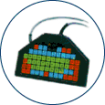

Index

- Description
- Points to ponder
- Non-Keyboard Based Enhancements
- Other Free Enhancements - Windows
- Other Free Enhancements - Macintosh
- Alternate Keyboards
This list is for reference purposes only and does not reflect endorsement by the IDRC
Description
Alternative keyboard layouts and other enhancements allow people who experience difficulty with conventional keyboard designs to use computers. The products available range from keyguards that prevent accidental key activation, to alternative keyboards with differing layouts, sizes, etc. for people who have specific needs. Additionally, there are alternative input systems which require other means/methods of getting information into a computer (e.g. on-screen keyboards, switches or speech based input).
Points to Ponder - Questions to consider when shopping for an alternative keyboard
- Is it compatible with your computer's platform? (and does it require a separate interface to work?)
- Is it programmable?
- What kind of connection is it? (USB, keyboard port, PS2, etc)
- Is it QWERTY, ABC or Dvorak layout? (can it be adjusted?)
- Is the keyboard design fixed, split or adjustable?
- Is a keyguard needed? Is it available?
- Are the keys recessed or do they protrude?
- Is it handheld?
- Is the angle of the keyboard adjustable?
- Does it have its own mount?
- Does it have different overlays?
- How much force is required for key activation?
Non-Keyboard Based Enhancements:
Windows 95/98/ME and Windows NT 4.x/2000 (since 1995), as well as Apple operating systems (since 198?), come with accessibility features most people are unaware exist. Not only do they help those people with a disability or injury to access the vast resources of a computer, but they can help anyone interact quickly and more easily.
Windows Operating Systems (Win98-XP): To open the "Accessibility Options" folder : From the Start menu choose "Settings" then select "Control Panel" from the sub-menu, you will be prompted with a new window displaying control panel options. The Accessibility Options folder is represented by an accessibility icon. With computers using Windows operating systems the Accessibility Options are usually pre-installed. Additional information is available from the Microsoft Accessibility Site.
Windows Vista: The Accessibility Options have been renamed the "Ease of Access Centre". Full instructions on the new accessibility features may be found on the Microsoft Accessibility Site.
MAC (Apple) Operating Systems: Select "Control Panel" from the main menu the "Easy Access" folder is represented by an accessibility icon. As it is the first icon in this Window, pressing the Home key should take you to it if your focus is not already on it by default. Full information on Apple's approach to accessibility may be found on the Apple Accessiblity Site.
Other Free Enhancements - Windows
- AccessDOS for DOS
- provides features including Stickykeys, Repeatkeys, Slowkeys and Serial Keys
- download AccessDOS from the Trace centre.
- Access Pack 2.0 for Windows 3.x
- provides the same features as AccessDOS (listed above)
- developed by the Trace "centre" for The Microsoft Corporation
- download Access Pack from the Trace "centre"'s site.
Other Free Enhancements - Macintosh
• The MAC OS X Physical/Motor Accessibility page has a complete list of OS X keyboard features e.g. Slow Keys, Sticky Keys, Keyboard Navigation and Keyboard Settings.
Alternative Keyboards
- BAT Personal Keyboard one handed keyboard
- includes ChordEasy software for creating macros
- call Infogrip Inc.
- Big Keys standard size computer keyboards with very large keys.
- The keys are one-inch square -- 4 times bigger than the keys on standard computer keyboards
- from the Big Keys Company
- Comfort Keyboards
- Provider of various assistive technology products for people with special needs and for preventing computer related injuries.
- DataHand Ergonomic Keyboard by DataHand Systems, Inc.
- The Ergonomic Keyboard is shaped to cradle the palm of your hand to reduce the stresses to your hands
- Features QWERTY key layout, an onboard mouse, and is available in three different models and in various sizes.
- Fingers remain on home-row keys to eliminate alignment errors
- FlexiBoard - customizable alternative keyboard.
- customized overlay program is included
- call Zygo Industries, inc.
- Freedom Of Speech
- Provides a list of keyboards according to one's need
- FrogPad - a one-handed keyboard
- can be used with USB Keyboard compatible PDA's, Pocket PCs, Tablet and Wearable PC's, and other mobile applications, such as portable laptops
- Intellikeys for PC or Macintosh computers.
- expanded keyboard comes with a selection of keyboard layouts
- customized overlay program is separate
- Lomak - a Light Operated Mouse and Keyboard that works with using a head based laser that is only activated while pointed at the keyboard.
- Magic Wand Keyboard for PC or Macintosh computers
- Pen-touch keyboard with mouse functions from In Touch Systems
- 100% Touchless Keyboard
-
A unique keyboard that tracks any pointing device optically using infrared sensors. Keyboards are available in a variety of keyboard sizes. Connects via a PS2 cable.
- Maltron Ergonomic Keyboard Specialists
-
The Maltron company manufactures a wide variety of molded keyboards targeted to those with keyboarding injuries.
- Datalux offers a variety of alternative and reduced sized keyboards
- keyboard and educational software designed specifically for kids.
- Durable, colour coded keys, easy to use
Jumbo XL Keyboard
- Kinesis offers alternate keyboards for Windows, Macintosh, Sun and USB systems
- TypeMatrix ergonomic and dvorak keyboards
- USB Mini from Tash Inc. - smaller one handed keyboard and uses membrane surfaces rather than actual keys.
- Fentek Systems
- key caps, key labels, "Happy Hacking Mini Keyboard," "Mini TouchPad Keyboard," "Mini Keyboard with full size keys," or "Mini Keyboard with full size keys and built in TouchPad" ; also a "Left Handed Keyboard/modular keyboard" and other keyboard related products.
- IBM Space Saver II Keyboard
- Keyboard - 6 pin mini-DIN (PS/2)
- from IBM - search for Space Saver Keyboard on their web site for different models
- My First Keyboard by Kidtech Inc.
- allows only one response per touch, not a Qwerty layout
- Step-On-It Keyboard Controls by Bilbo
- MiniMorse
- there is no web information on this product, contact the Bloorview-MacMillian Centre directly
- Morse code based input system for Windows and Macintosh computers
- from Bloorview-MacMillian Centre
- Intellikeys Activity Exchange is a searchable archive of intellikeys overlays.
- Fentek Systems